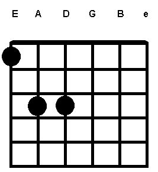
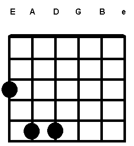
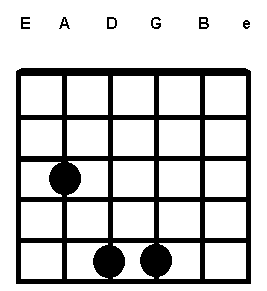

The Nacher´s method is a way to write songs easier when the chords are power chords.
the method consists in just numbers.
In this section, I will post some examples and finally a song with this method.
| 1 | 3 | 3* |
|---|---|---|
|  |  |  |
1
3
3*
"When I Come Around"
INTRO: 3-5*-7*-3* (x#)
3 5* 7* 3*
I heard you crying loud,
3 5* 7* 3*
All the way across town
3 5*
You've been searching for that someone,
7* 3*
And it's me out on the prowl
3 5* 7* 3*
As you sit around feeling sorry for yourself
3 5* 7* 3*
Well, don't get lonely now
3 5* 7* 3*
And dry your whining eyes
3 5*
I'm just roaming for the moment
7* 3*
Sleazin' my back yard so don't get so uptight
3 5* 7* 3*
You been thinking about ditching me
0* 3*
No time to search the world around
0* 3*
Cause you know where I'll be found
When I come around
INTRO